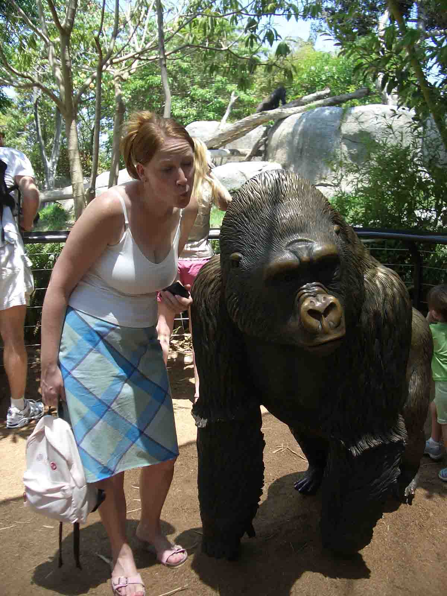
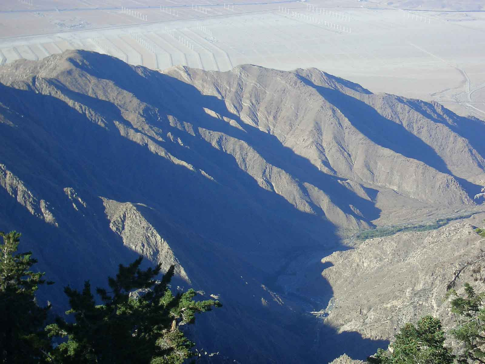
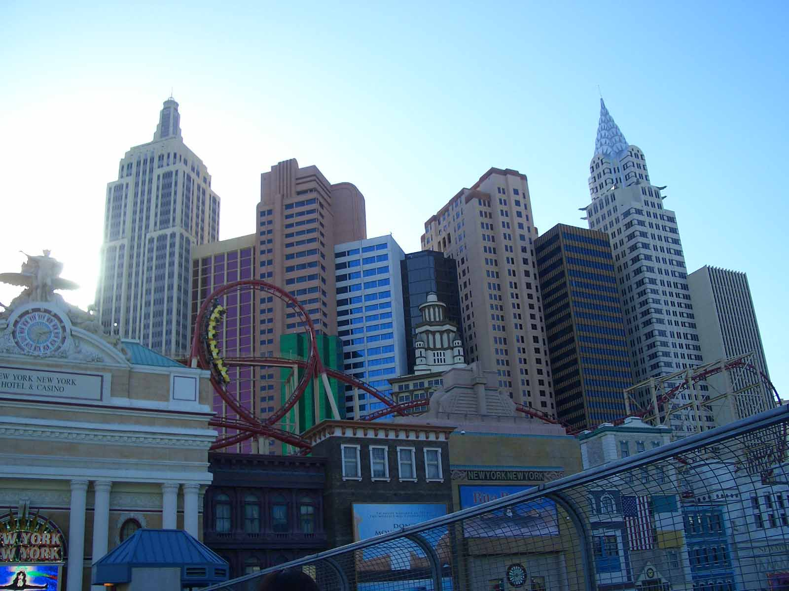
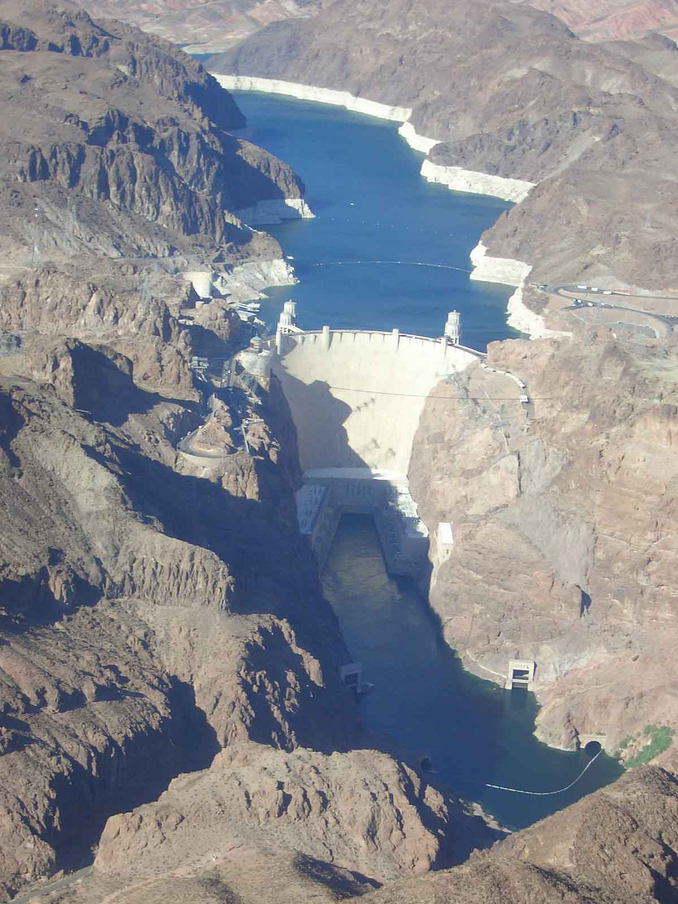
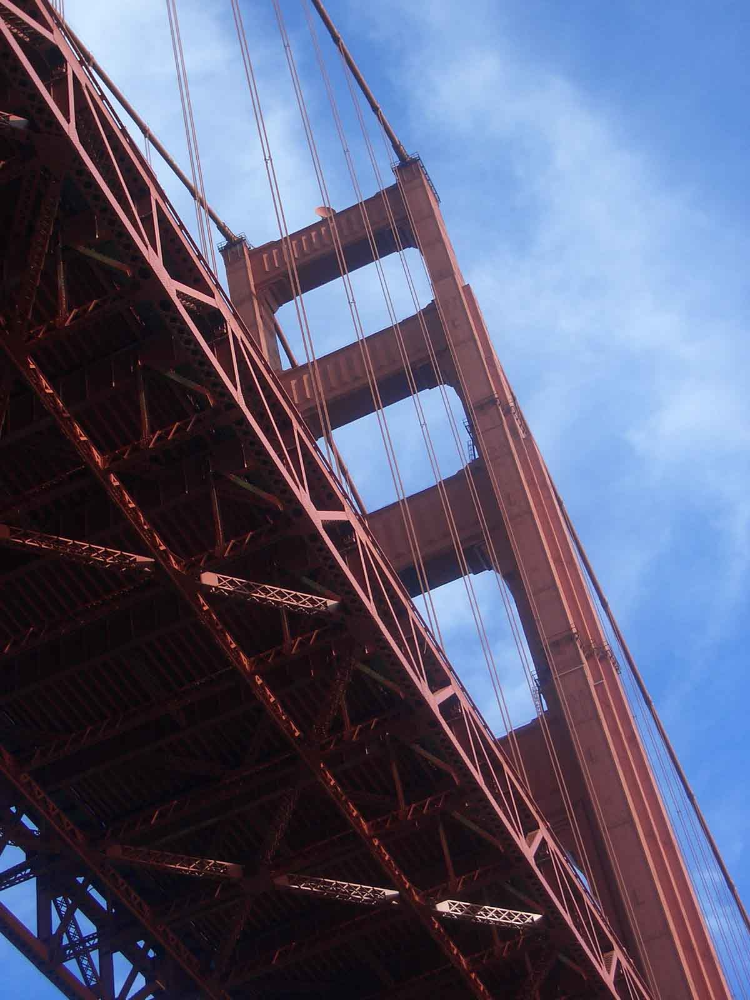
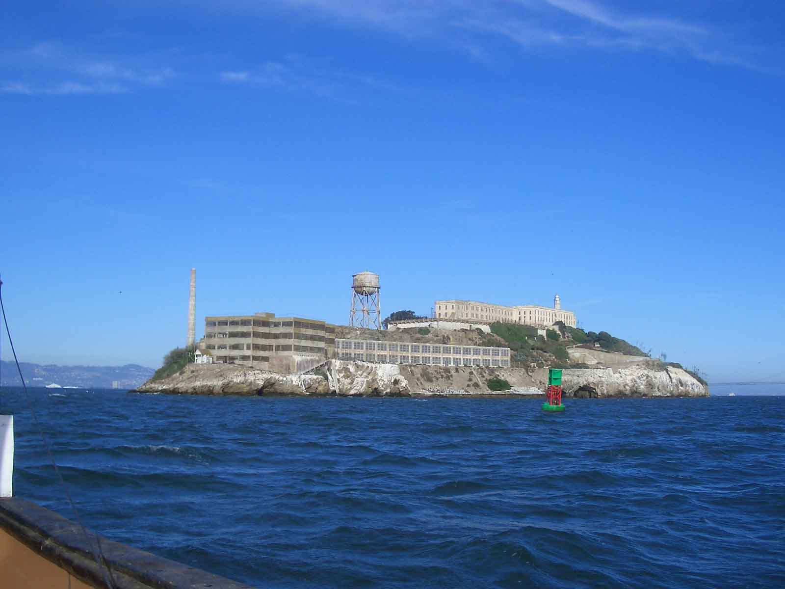

Thelma & Louise
California, Nevada & Washington, United States
Thelma and Louise checking in…
We arrived safely in the US of A but only after we filled out some forms confirming that we were not seeking entry to engage in criminal activity or were currently involved in espionage. Oh, and we did not have any communicable diseases, physical or mental. Hmmm...
LA, what can we say?? We were standing on the corner trying to figure out how to cross the street and if it was our turn or not (you may laugh but you are allowed to turn right on a red light here so there!) and a guy rolls down his window and tells us we can cross and welcome to California!
We walked along Venice Beach and Santa Monica which was really nice. We saw some of those people you see on TV doing the Roller Blading and pumping weights on Muscle Beach.
The next day we picked the car up which was an experience, we got an upgrade which meant we were now driving a tank instead of a lovely little car. Getting out of LA was challenging. Negotiating 5/6 lanes of traffic on the wrong side of the road in a tank was rather hard work. But having done that we now know we can do anything!!! We managed to get to San Diego, took a bit longer than anticipated due to navigational problems (not saying who...). We went to the San Diego Zoo which was a really nice zoo and took tons of pictures. We also did some sightseeing in and around San Diego along with a really nice harbour cruise. San Diego is a nice but busy city.
Our next stop was Palm Springs which was not just hot but bloody HOT HOT HOT. We didn’t get out of the car until we got there and had a bit of a shock stepping into that heat, 120+!! We went up the aerial gondola to the top of Mt Jacinto where it was a bit cooler and the views were amazing.
We hopped into our car and then drove through the Mojavi Desert to Las Vegas. Las Vegas was also HOT HOT HOT. But how much fun!! We did the casinos, went to a show and had our first real night out with some locals. Needed a degree to work out the slot machines but we were quick on the uptake when we realised that you get free drinks when you sit and gamble…so we gambled just a bit!! Some of the casinos were just awesome. Everything is just big and glamorous. We also did a helicopter ride over Lake Mead, the Hoover Dam and the Grand Canyon and then landed on a Ranch where we had a BBQ and did some Horse Riding. No, Shaz didn’t, just Kerstin. The Grand Canyon was really something else. It’s just beautiful! On the way back we went over the Vegas strip and saw the lights at night time, it was excellent. 3 days in Vegas was plenty though and we then headed over to Santa Barbara. What a lovely place. They have some really nice buildings all based on Spanish architecture. We toured the court house and got to sit in a court room where a criminal was awaiting his sentence. We did get a bit worried when we sat down and the officer came and sat next to us and asked us if we had business here… We then drove to San Francisco and stopped on the way at Santa Cruz for lunch and to take in the beach. Very nice place. Then headed back along the coastal road which had some fantastic views. Shaz was driving at this point or should we say speeding…got pulled over (wish it was pulled!) by a very handsome officer. After batting her eye lashes a bit and saying ‘sorry officer’ a few times he let us off. Lucky!!!
We then arrived in San Francisco. Lots of cars, lots of Highways, lots of traffic and lots of hills. We dumped the car and did it all by foot. Did we mention the hills?? Hard work, honestly!! We did a harbour cruise that took us under the Golden Gate Bridge and around Alcatraz. It was freezing! Compared to the other cities we have been to San Francisco is much cooler and very windy (especially on the back of a Fishing Boat!!). The following day we did the trip to Alcatraz which was really good. The cells are so tiny, actually the whole island is quiet small. We got to hear about some of the famous prisoners, i.e. the Birdman of Alcatraz who was in solitary for 6-8 years. If that didn’t drive him mad…
We also went to the Golden Gate Park and chilled listening to some people playing the drums. San Fran (as the locals call it) is a lovely city and there was tons to do. The houses, trams and hills just make it a really unique city and a lovely place to visit, would definitely come back here!
As we dumped we car we flew from San Fran to Seattle. Well, what a city! By far the friendliest!!! We took the bus into Downtown and asked the bus driver where the best place was to get off. Well, it was a free for all. The whole bus was discussing what we should do while we were here and where we should go. Mad!! We did take some of the suggestions though and headed to the Pike Place Market where they throw fish (you really have to duck to miss it if you are in the line of fire). It’s the oldest working market in North America. We then went up the Space Needle where we had a fantastic view of the city. It was built in the 60’s for an exhibition about the 21st century. It was cool!
We did some more walking and sightseeing and on our last night we went to an irish pub where we didn’t have the authentic celtic curry but stuck the lager!!
Our favourite places so far have been Santa Barbara and Seattle. The people there have been really nice and helpful. Not like some places where they look at you as though you are stupid…of course you are supposed to now that you pay for your petrol before you put it in your car! Apparently that is faster, unless you get Shazza and Kerstin asking stupid questions of course!!
Our next part of the trip is taking us to Canada. We are planning to stop at Vancouver, Whistler and Victoria. We’ll be looking for some Bears and Mounties!!! Can’t wait!!!!
Lots of Love
Thelma (Shaz) & Louise (Kerstin) xxxxxxxxxxxxxxxxxxxxxxxxxxxxxxxxxxxxxxxxxxxxxxxxxxxxxxxxxxxxxxxxxxxxxxxxxxxxxxxxxxx

San Fran

Shaz getting up close and personal

Wanted to take him home - sooooo cute!

Kerstin's turn to get up close and personal

San Diego

View of Palm Springs

Las Vegas

Kerstin waiting for her free drink!!!

Hoover Dam

Golden Gate Bridge

The Rock